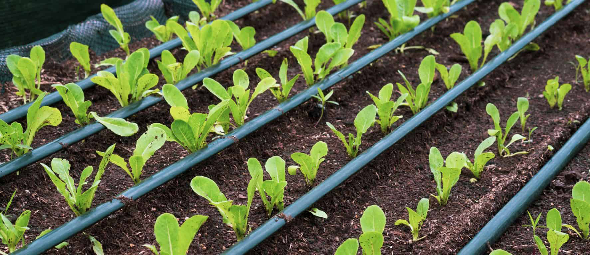

About Us
Madhav Irrigation is a trusted manufacturer and supplier of high-quality irrigation products designed for both agricultural and urban applications. We specialize in the design and manufacture of a wide range of products, including metal and plastic filters, valves, pipes, sprinklers, and various fittings and accessories.
Founded in 1995, Madhav Irrigation has been providing customers with reliable and efficient irrigation solutions for over 25 years. We are committed to delivering superior products that are engineered to meet the specific needs of our customers, ensuring maximum efficiency and effectiveness in their irrigation systems.
At Madhav Irrigation, we understand the importance of sustainability and conservation in agriculture and urban environments. That's why we are dedicated to providing innovative products and technologies that help our customers optimize their water usage and reduce waste, while still achieving the best possible results.
We take pride in our commitment to quality, and we are constantly working to improve and innovate our products and processes to meet the ever-changing needs of the market. Our team of experienced engineers and technicians are highly skilled in their respective fields, and are dedicated to ensuring that each and every product we produce meets the highest standards of quality and reliability.
Thank you for considering Madhav Irrigation for your irrigation needs. We look forward to working with you to create sustainable, efficient, and effective irrigation solutions.